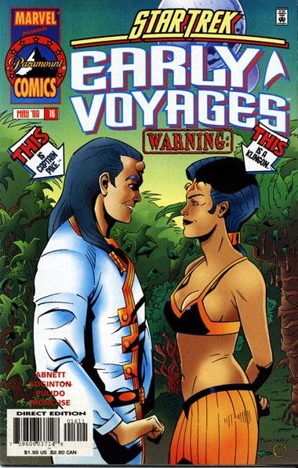
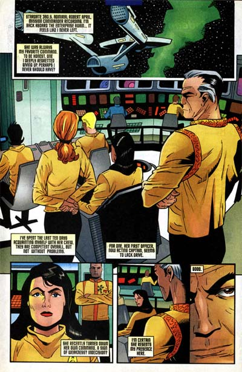

|


|
Gnese
| Episdios I Reflexes
| Palavras do autor | Palavras
do artista Star Trek
Early Voyages, n 16 maio de 1998  Histria: Dan Abnett e Ian Edginton Material produzido por Salvador Nogueira para o Trek Brasilis
Data Estelar: 390.5 Sinopse: Pike, Boyce e Spock esto disfarados como habitantes locais, infiltrados no planeta dos Temazi, uma cultura pr-industrial que foi visitada por aliengenas ultra-avanados em uma poca antiga. O objetivo da misso dos trs identificar Klingons infiltrados naquela civilizao. Relatrios da inteligncia da Frota Estelar indicam que uma das casas do Imprio est tentando localizar poderosas armas deixadas pelos aliengenas que visitaram esse mundo milnios atrs. Infiltrados, os trs so obrigados a passar pelos rituais religiosos intensos e morosos dos Temazi --que so extremamente rgidos e que matam qualquer aliengena que no se parea com eles ou seus deuses. O trio no est tendo sucesso em localizar os Klingons, mas Boyce repara que h uma bela Temazi no templo que no tira os olhos de Pike. Enquanto isso, na Enterprise, a Nmero Um est no comando, mas com a incmoda presena do almirante Robert April sobre seu ombro. Ele veio nave justamente para essa misso. Enquanto Pike, Boyce e Spock procuram os Klingons, a Enterprise tem como objetivo estar preparada para tirar o grupo de descida do planeta ao menos sinal de problema. Adicionalmente, eles devem procurar por naves Klingons no setor. No planeta, Spock e Boyce tentam, por seus prprios meios, encontrar os Klingons, mas sem sucesso. Pike, em compensao, tem um novo encontro com a mulher do templo. Ela se oferece como uma guia da cidade, mas ele recusa, pela necessidade de manter o contato com os nativos ao mnimo. A mulher acha Pike muito familiar, mas no o identifica. Mais tarde, ela se rene com seus colegas, e descobrimos que ela Virka, uma das tripulantes do velho algoz de Pike, o Klingon Kaaj. Ela diz que o segredo para encontrar as armas seguir a pista de um nobre que ela conheceu --Pike. Os Klingons vo at o templo, para ver o nobre de quem Virka falava. Quando Kaaj o v, reconhece na hora: Pike! Irado, Kaaj parte para o ataque, acabando com o disfarce dos dois grupos. Os Temazi reconhecem os participantes da briga como aliengenas e os perseguem, com o objetivo de execut-los. Enquanto isso, no espao, a Enterprise encontra sua prpria cota de naves Klingons. Continua...  Comentrios Definitivamente de volta primeira metade do sculo 23, "Thanatos" retoma uma histria iniciada na edio nmero 12, quando April vem bordo da Enterprise. Somos apresentados histria da metade, com Pike, Spock e Boyce j na superfcie do planeta, o que d uma tremenda agilidade narrativa. Todo o enredo envolvendo os Temazi e o conflito com os Klingons muito bem bolado, e a desculpa excelente para trazer de volta o velho inimigo de Pike, Kaaj. At parece que finalmente vamos conhecer um pouco melhor os planos e objetivos desse Klingon que est em busca do poder em seu prprio Imprio. Infelizmente, isso acaba no acontecendo, por culpa do fim abrupto da publicao. A histria bem fluida e no trabalha muito com os personagens. O melhor trabalhado de todos o lendrio almirante Robert April. Temos a chance de fazer uma "visita" mente do primeiro capito da Enterprise clssica, e as cenas em que ele avalia a tripulao de Pike so muito interessantes. Os roteiristas se esmeraram para dar um toque retr srie, como se fosse mesmo uma produo dos anos 50/60. Ouvimos na mente de April sua preocupao com tantas mulheres em cargos de chefia, por exemplo, e vemos o almirante demonstrar sua poltica de seriedade e mo de ferro. Realmente muito envolvente. A arte espetacular. Trata-se da primeira edio de Javier Pulido em Early Voyages, e ele imprime um estilo totalmente diferente do de Zircher e Collins. O desenho mais tracejado, menos rico em detalhes, mas de uma beleza mpar. A qualidade ainda mais ressaltada pela habilidade de Marie Jarvins nas cores, ressaltada ainda mais pelos traos limpos de Pulido. Nesse aspecto, s as cenas espaciais deixam um pouco a desejar, com menos detalhes do que gostaria de ver para a Enterprise. De toda forma, o comeo de mais um espetacular arco para Pike e sua tripulao. Um que, infelizmente, nunca iria terminar...
|